---
{
"layout": "note",
"title": "[Gas Dynamics] Ch 7 Moving and Oblique Shocks - part 1",
"journal": true,
"section": "Study",
"topic": "Gas Dynamics",
"excerpt": "[Gas Dynamics] Ch 7 Moving and Oblique Shocks - part 1 So far, Standing Normal shock에 대해서 배웠고 이제 1. 움직이는 Moving normal shock 2. 기울",
"classes": "wide",
"permalink": "/blog/mechanical-engineering/gas-dynamics/gas-dynamics-ch-7-moving-and-oblique-shocks-part-1/",
"study_area": "Mechanical",
"date": "2024-03-25",
"source_url": "https://jeffdissel.tistory.com/m/16",
"header": {
"teaser": "/blog/mechanical-engineering/gas-dynamics/gas-dynamics-ch-7-moving-and-oblique-shocks-part-1/images/img-001.png"
}
}
---
{% raw %}[Gas Dynamics] Ch 7 Moving and Oblique Shocks - part 1
So far,
Standing Normal shock에 대해서 배웠고 이제
1. 움직이는 Moving normal shock
2. 기울어진 Oblique shock
에 대해서 유동이 어떻게 되는지 알아보자.
1. Moving Normal shock
Normal shock이 만약 움직이는 경우, 사실 아주 심플하다.
상대속도의 개념을 사용하면 된다.
관찰자가 밑 그림처럼 Normal shock 의 reference 좌표계에 있다고 생각하고
모든 property들을 계산 하는 것이다.
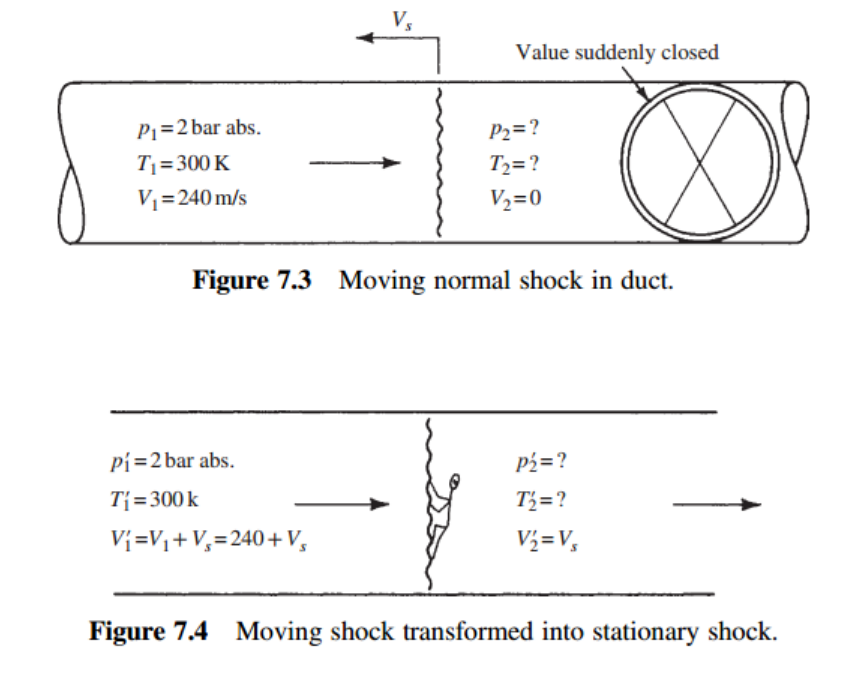
Moreover, Normal shock Table을 보면 속도 변화량을 inlet air velocity로 나눈 값을 통해
M1을 알 수 있고 M2, 온도, 압력 ratio등 을 모두 구할 수 있게 된다.
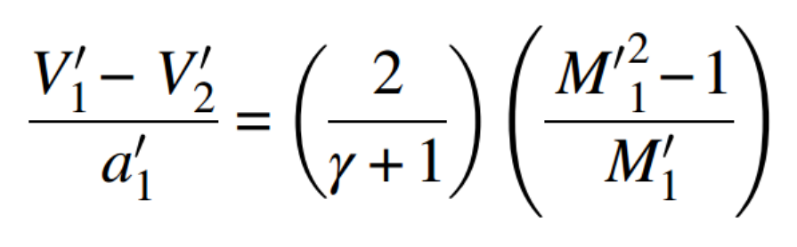
여기서 조심해야 할 것은
Reference 좌표계에서의 값과 실제 좌표계에서 값의 차이 이다.
당연히 속도는 다르므로 -> Ma도 현실과는 다르다.
뿐만아니라 Stagnation property들도 전부 다르다.
Stagnation 정의 자체가 fluid를 Isentropic process를 통해서
현재 좌표계와 동일한 위치에 두었을때의 property이기 때문
.
간단하고 빠르게 예제문제를 살펴보면서
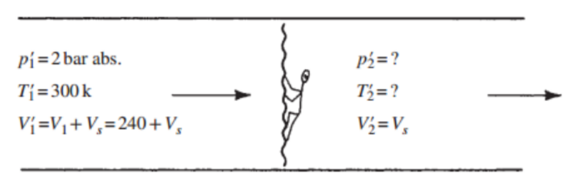
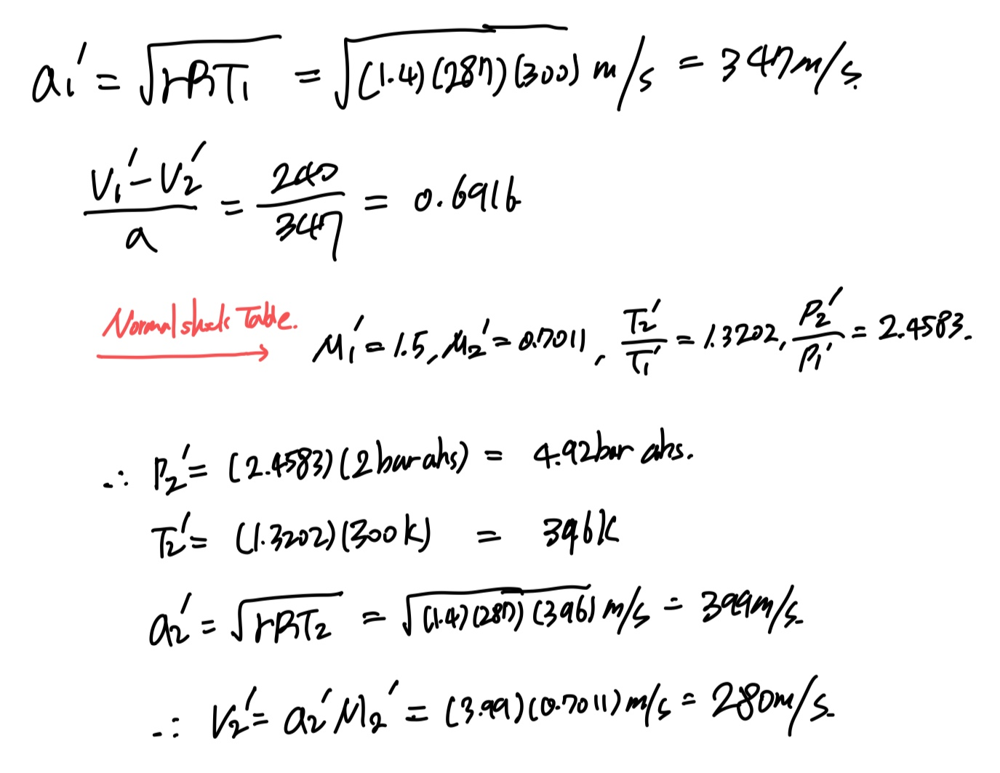
따라서 Shock 의 속도는 280m/s임을 알 수 있다.
2. Oblique shock
일단 Oblique shock에 들어가기전에
지금까지 배운 Normal shock의 한계에 대해서 생각해보자.
(결국 Normal shock이 생길 수 없는 상황에서 Oblique shock발생)
a) 너무 심한 압력 증가
[노즐 Exit 에서 Normal shock 발생하는 경우]
2nd critical = P rec
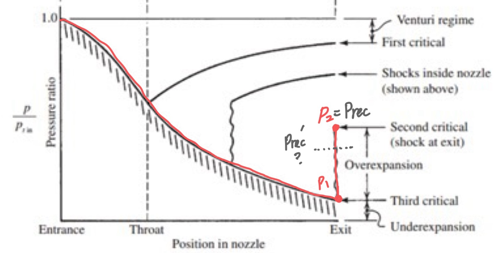
결국 유체는 노즐안에서 P1까지 계속해서 감소하다가 Exit부근에서
급격하게 압력을 높여주어야만 한다 왜??
밖의 압력 Prec = P2 > P1 이므로
Boundary condition에 부합하지 하려면, 압력을 높여 주어야 한다.
따라서,
Normal shock 을 이용해서 압력 수직상승 후
P2=Prec
로 Boundary condition 을 맞춰진다.
만약에 Prec -> Prec'으로 낮춰버리면????
그러면 Normal shock을 이용하기에는
너무나도 큰 압력상승이라 불가능
따라서 따라서,
여기서 조금 더 약한 Shock이 필요하다
더 작은 압력 수직상승이 필요
그래서 등장한 'O blique shock'
밑에서 탐구하겠지만 Oblique shock은 기울어져 있어
Shock의 효과가 Normal shock 보다 나약하다
b) 방향전환
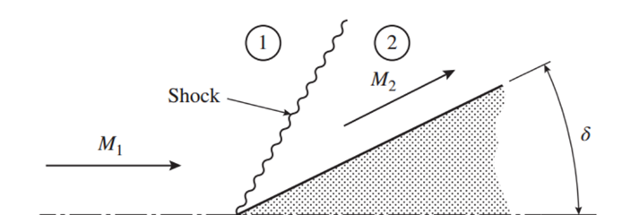
M1 > 1, supersonic flow가 벽면을 만났나면
당연히, 속도벡터 방향이 벽면과 평행하게 바뀌어야 한다.
방향을 이렇게 급격하게 바꾸는 역할을
Normal shock은 수직방향만 존재하므로
'Oblique shock'만이 가능
이제 Oblique shock의 특징을 통해 언제 출몰하는지
감이 왔을 것이다.
이제 normal shock과 마찬가지로 수학적으로 해석해보자.
Oblique shock의 단면적 모습은 다음과 같다.
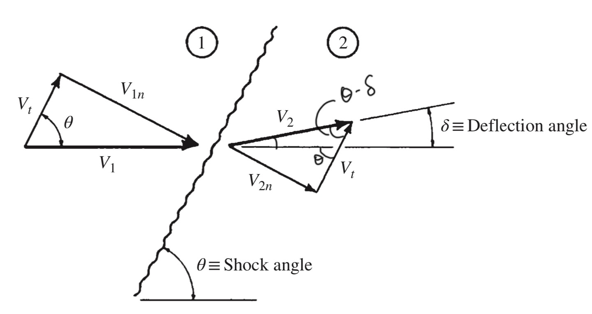
그림에서 속도백터를 shock 과 수직한 방향, 수평한 방향 두가지로 나누어서 생각해보자
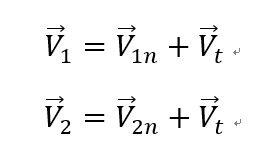
Shock의 영향으로 속도 감소가 일어나는 부분은 Only 수직방향 벡터.
즉, 수평방향은 V1t = V2t = Vt로 같다.
수평방향은 그대로, 수직방향만 감소하기 때문에 V1과 V2는 평행백터일 수가 없고,
Deflection angle 만큼 기울어짐
여기서,
V1n = V1sin
θ, a1n = a1 (같은 온도이므로)
V2n=V2 sin( θ - δ ), a2n = a2(같은 온도이므로)
따라서 우리는 다음과 같이 수직성분 Ma 를 정의 할 수 있다.
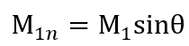
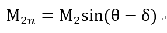
Shock 의 특징은
무조건
Supersonic -> Subsonic 과정이라는 것을
Normal shock 정리 시간에 확인 하였다.(엔트로피 증가법칙으로)
Therefore,
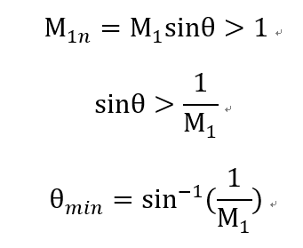
Shock 이 발생할 최소한의 Shock angle 을 우리는
'Mach angle'
이라고 Define
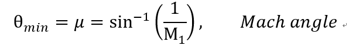
간단한 예제로 감을 잡아보자 문제풀이가 감잡기 가장 좋다.
Q. M2??
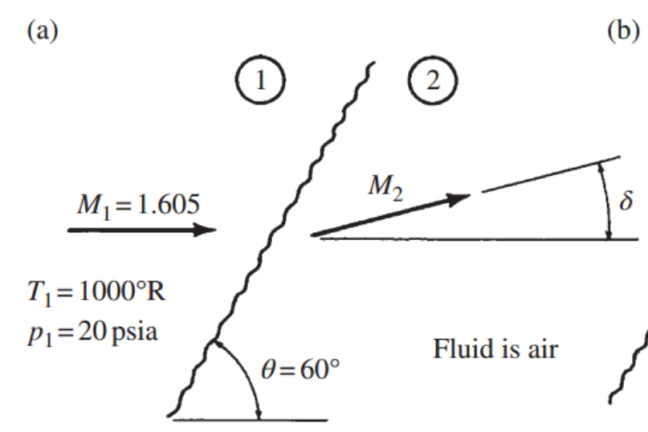
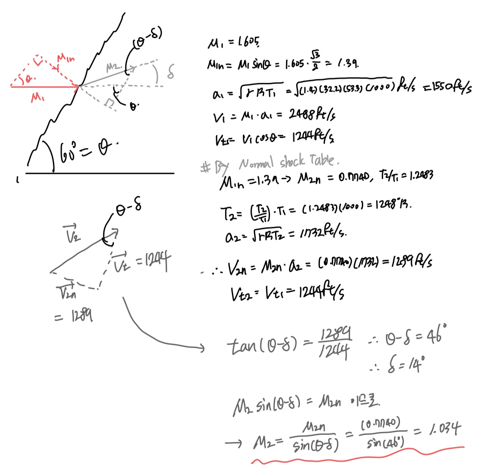
{% endraw %}